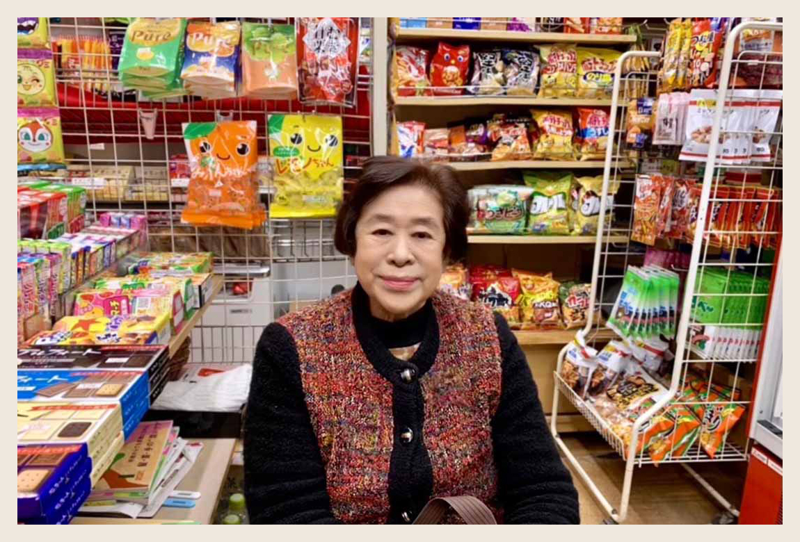

梶村商店二代目

二代目は、昭和、平成、令和と長きに渡り、「売店のおばちゃん」として多くの皆様から愛されてきました。気さくな人柄は、幅広い年代の方々に親しくしていただきました。

梶村商店は宇品港が広島港へ改称してから３年後の１９３５年(昭和１０年)に創業しました。３代目となった今も「広島港のおみやげ屋」として当時と変わることなく皆様に笑顔とおもてなしを届け続けています。ご来店いただいたお客様の心に留まり、ご愛顧いただけるようこれからも努めてまいります。
広島港の歴史は約800年前、年貢の運搬用の船運が太田川河口付近に集まったことに始まります。しかし、広島港が港としての機能を備えたのは、明治22年、千田県令により宇品築港が完成した時で、これによって近代港湾としての第一歩を踏み出しました。その後、1935年 昭和10年に宇品港から広島港へ改称。『梶村商店』もこのころ創業いたしました。
旧ターミナルは1965年(昭和40年)に完成。写真は1989年開催の「海と島の博覧会」の文字が建物入口上に写っている為、昭和末期から平成初期に撮影したものと思われます。
広島港宇品旅客ターミナルは、広島の海の玄関口として多くの旅行者・通勤者・通学者等の拠点であるとともに、国土交通省から登録を受けた「みなとオアシス広島」の代表施設として住民参加による地域振興の取り組みが継続的に行われる拠点となっています。
二代目は、昭和、平成、令和と長きに渡り、「売店のおばちゃん」として多くの皆様から愛されてきました。気さくな人柄は、幅広い年代の方々に親しくしていただきました。
現在は三代目へと代替わりをしましたが、先代の意志も受け継がれ、お客様に笑顔とおもてなしを心がけ温かい気持ちで帰っていただけるように日々、精進させていただいております。